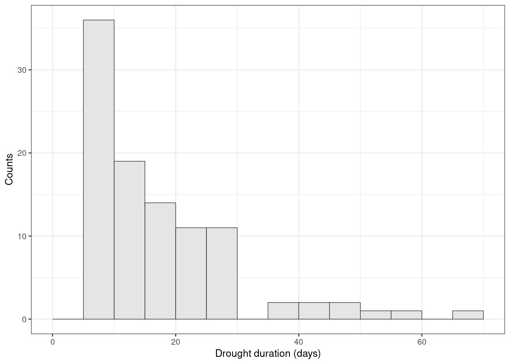

The threshold level method can be used to derive drought events from a given time series of river flows. A drought event starts when the flow falls below a given threshold \(Q_0\) and when the flow rises above the threshold the drought event ends.
It is possible to analyse any of the series in the International Data Set (Section 4.5.1) as long as there are not too many missing values in the dataset and a meaningful threshold \(Q_0\) is choosen. Data from River Ngaruroro at Kuripapango (NZ) are used to demonstrate the procedure in the example below.
library(tidyverse)
library(hydroDrought)
ngaruroro <- intl %>%
filter(river == "Ngaruroro") %>%
select(data) %>%
unnest(data) Missing/unknown values (NAs) can neither be seen as ‘a flow below the threshold’ or ‘above the threshold’ as the flow value itself is unknown. A single missing value will cause the function drought_events() to terminate a dry spell (drought event) or wet spell. Subsequently most characteristics derived for this event (e.g. drought duration, drought termination, drought volume, … ) will be biased.
A conservative approach would be to eliminate years with missing values completely. Instead periods of missing data can been interpolated if of short duration (e.g. < 15 days), removing only years with long periods of missing values.
ngaruroro <- ngaruroro %>%
sanitize_ts(approx.missing = 14) %>%
mutate(
year = water_year(time, origin = "-09-01")
) %>%
print()## # A tibble: 20,473 x 3
## time discharge year
## <date> <dbl> <dbl>
## 1 1963-09-20 30.5 1963
## 2 1963-09-21 52.8 1963
## 3 1963-09-22 43.6 1963
## 4 1963-09-23 37.3 1963
## 5 1963-09-24 32.3 1963
## 6 1963-09-25 29.0 1963
## 7 1963-09-26 25.3 1963
## 8 1963-09-27 22.4 1963
## 9 1963-09-28 19.9 1963
## 10 1963-09-29 18.2 1963
## # … with 20,463 more rowsincomplete <- ngaruroro %>%
filter(!is.na(discharge)) %>%
pull(time) %>%
coverage_yearly(origin = "-09-01") %>%
filter(days.missing > 0) %>%
print()## # A tibble: 8 x 5
## year days.with.data days.in.year days.missing coverage
## <dbl> <int> <int> <int> <dbl>
## 1 1963 347 366 19 0.948
## 2 1965 294 365 71 0.805
## 3 1977 350 365 15 0.959
## 4 1978 305 365 60 0.836
## 5 1986 341 365 24 0.934
## 6 1987 336 366 30 0.918
## 7 2001 344 365 21 0.942
## 8 2019 38 366 328 0.104ngaruroro <- ngaruroro %>%
anti_join(incomplete, by = "year")After preprocessing the time series 49 years of daily flow (1964-09-01 to 2019-08-31) will be analysed. In total eight years are omitted from the series (1963/64, 1965/66, 1977/78, 1978/79, 1986/87, 1987/88, 2001/02 and 2019/20).
In this river the low flow period covers the turn of the calendar year. To avoid problems with allocating droughts to a specific calendar year because of drought events starting in one year and ending in another year, the start of the year is defined to on September 1st.
A sequence of drought events is obtained from the streamflow hydrograph by considering periods with flow below a certain threshold, \(Q_0\). In this example \(Q_{90}\) is used as threshold. A table of drought characteristics is derived with the function drought_events().
q90 <- lfquantile(ngaruroro$discharge, exc.freq = 0.9) %>%
print()## Q90
## 4.949droughts <- ngaruroro %>%
drought_events(threshold = q90, pooling = "none") %>%
print()## # A tibble: 210 x 7
## event first.day last.day duration volume qmin tqmin
## <int> <date> <date> <drtn> <dbl> <dbl> <date>
## 1 1 1967-04-23 1967-04-23 1 days 6307. 4.88 1967-04-23
## 2 2 1967-04-26 1967-04-26 1 days 4579. 4.90 1967-04-26
## 3 3 1967-05-09 1967-05-10 2 days 17453. 4.80 1967-05-10
## 4 4 1967-05-13 1967-05-14 2 days 18835. 4.76 1967-05-14
## 5 5 1967-05-23 1967-05-23 1 days 3024. 4.91 1967-05-23
## 6 6 1968-02-07 1968-02-08 2 days 34646. 4.69 1968-02-08
## 7 7 1968-02-17 1968-03-08 21 days 1766621. 3.44 1968-03-05
## 8 8 1968-03-11 1968-04-02 23 days 2349562. 3.23 1968-03-26
## 9 9 1968-04-06 1968-04-09 4 days 293933. 3.76 1968-04-08
## 10 10 1969-03-25 1969-03-30 6 days 103766. 4.68 1969-03-26
## # … with 200 more rowsThe table displayed above includes:
first.day below the threshold;last.day below the threshold;duration (days), defined as the full drought duration (last.day - first.day + 1)volume (in m3), defined as the sum of the daily deficit flows times the duration in days;qmin (in m3s-1), defined as the minimum flow \(Q_{min}\) within a drought event;tqmin.To reduce the problem of minor droughts two restrictions can be imposed:
a minimum drought duration, \(d_{min}\) that removes droughts with duration less than the specified number of days;
a minimum drought deficit volume (coefficient \(\alpha\)), that removes droughts with a deficit volume less than a certain fraction \(\alpha\) of the maximum drought deficit volume in the complete series of drought events.
We will append a logical column called is.minor to the table of drought events. It is TRUE when drought duration is less than five days and if the drought volume is less than 51 133.25 m3 (5% of the maximum drought deficit volume).
droughts <- droughts %>%
mutate(is.minor = duration < 5 | volume < max(volume) * 0.005) %>%
print()## # A tibble: 210 x 8
## event first.day last.day duration volume qmin tqmin is.minor
## <int> <date> <date> <drtn> <dbl> <dbl> <date> <lgl>
## 1 1 1967-04-23 1967-04-23 1 days 6307. 4.88 1967-04-23 TRUE
## 2 2 1967-04-26 1967-04-26 1 days 4579. 4.90 1967-04-26 TRUE
## 3 3 1967-05-09 1967-05-10 2 days 17453. 4.80 1967-05-10 TRUE
## 4 4 1967-05-13 1967-05-14 2 days 18835. 4.76 1967-05-14 TRUE
## 5 5 1967-05-23 1967-05-23 1 days 3024. 4.91 1967-05-23 TRUE
## 6 6 1968-02-07 1968-02-08 2 days 34646. 4.69 1968-02-08 TRUE
## 7 7 1968-02-17 1968-03-08 21 days 1766621. 3.44 1968-03-05 FALSE
## 8 8 1968-03-11 1968-04-02 23 days 2349562. 3.23 1968-03-26 FALSE
## 9 9 1968-04-06 1968-04-09 4 days 293933. 3.76 1968-04-08 TRUE
## 10 10 1969-03-25 1969-03-30 6 days 103766. 4.68 1969-03-26 FALSE
## # … with 200 more rowsDue to this criteria a total number of 99 droughts are considered minor droughts.
Figure x.x: Drought duration and drought deficit volume for years 2010 to 2016. A drought event is classified as a minor drought if the duration or the volume is below a given threshold.
The inter-event time criterion (IC) is used to pool dependent droughts which are separated by a short period of flow above the threshold. If the time between two droughts is less than a critical duration, \(t_{min}\), the two events are pooled.
In this example \(t_{min}\) is set equal to two days.
pooled <- ngaruroro %>%
drought_events(
threshold = q90, pooling = "inter-event",
pooling.pars = list(min.duration = 2, min.vol.ratio = Inf)
) %>%
filter(duration >= 5, volume > max(volume) * 0.005) %>%
arrange(desc(duration)) %>%
print()## # A tibble: 100 x 9
## event first.day last.day duration dbt volume qmin tqmin pooled
## <int> <date> <date> <drtn> <drtn> <dbl> <dbl> <date> <dbl>
## 1 166 2015-01-06 2015-03-15 69 days 69 days 1.02e7 2.17 2015-03-04 0
## 2 37 1974-01-20 1974-03-17 57 days 56 days 6.51e6 2.88 1974-03-15 1
## 3 138 2008-01-10 2008-03-01 52 days 51 days 6.41e6 2.64 2008-02-28 1
## 4 30 1973-01-26 1973-03-12 46 days 46 days 6.58e6 2.66 1973-03-03 0
## 5 50 1983-02-16 1983-04-02 46 days 46 days 7.38e6 2.46 1983-03-30 0
## 6 148 2009-03-14 2009-04-26 44 days 43 days 6.01e6 2.53 2009-04-19 1
## 7 157 2013-02-07 2013-03-18 40 days 40 days 7.09e6 2.38 2013-03-15 0
## 8 124 2005-02-06 2005-03-16 39 days 38 days 4.99e6 2.68 2005-03-13 1
## 9 139 2008-03-09 2008-04-14 37 days 36 days 5.22e6 2.65 2008-04-06 1
## 10 59 1989-04-01 1989-04-29 29 days 29 days 2.71e6 3.3 1989-04-29 0
## # … with 90 more rowsWhenever drought events were pooled the table of drought events contain two more columns:
the duration below the threshold dbt: full drought duration minus short periods (the inter-event time) above the threshold;
the number of pooled drought events.
The drought deficit characteristics of the ten longest lasting (pooled) drought events are given in the table above.
To summarise all drought events for every year one could calculate the year based on the year of the first.day of and event and derive for example the following metrics:
pooled %>%
mutate(
year = water_year(first.day, origin = "-09-01")
) %>%
group_by(year) %>%
summarise(
n.droughts = n(),
real.duration = sum(dbt),
min.flow = min(qmin)
)## # A tibble: 35 x 4
## year n.droughts real.duration min.flow
## <dbl> <int> <drtn> <dbl>
## 1 1967 2 44 days 3.23
## 2 1968 2 22 days 3.88
## 3 1969 3 37 days 3.89
## 4 1970 3 34 days 3.73
## 5 1972 7 114 days 2.66
## 6 1973 2 63 days 2.88
## 7 1974 2 10 days 4.31
## 8 1975 2 18 days 4.09
## 9 1977 1 25 days 3.46
## 10 1982 2 57 days 2.46
## # … with 25 more rowsFrom the first table it can be seen that there are 100 drought events in total, on average 2.04 events every year. Minor droughts are dominating with 43 events lasting less than 11 days. Only 9 events lasted more than 30 days.
The time series of the drought duration can be seen in Figure 5.12, and the major droughts are found in 2014, 1973, 2007, 1972, 1982 and 2008.
Figure 5.12 Time series of drought duration for River Ngaruroro at Kuripapango (NZ). Selection criteria: threshold level = \(Q_{90}\), \(d_{min} = 5\) days, \(\alpha = 0.005\) and \(t_{min} = 2\) days.
A histogram of the drought duration is seen in Figure 5.13, and a very skewed distribution is revealed.
ggplot(pooled, aes(duration)) +
geom_histogram(binwidth = 5, boundary = 0, closed = "left", col = "white") +
scale_x_continuous(limits = c(0, NA)) +
scale_y_continuous(breaks = integer_breaks()) +
labs(x = "Drought duration (days)", y = "Counts")Figure 5.13 Histogram of drought duration for River Ngaruroro at Kuripapango (NZ). Selection criteria: threshold level = \(Q_{90}\), \(d_{min} = 5\) days, \(\alpha = 0.005\) and \(t_{min} = 2\) days.
